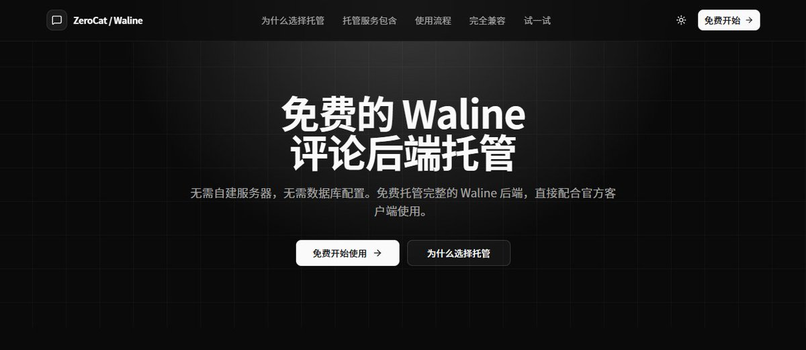

孙悟元
@wuyuandev
@32_aug 说到博客，评论区可以试试这个

孙悟元
@wuyuandev
写博客时本来想用 Waline，结果还要自己上 Vercel、配数据库、搞 OAuth……不难，但真的麻烦。
所以我做了 ZeroCat Waline Services
直接提供后端服务，免部署、免配置、开箱即用，而且免费。
专心写内容就够了。 🚀
https://t.co/2hsY02A2IC https://t.co/byGryCZYMC
みぞれのオーボエ
@32_aug
对编程一窍不通的人照教程斗智斗勇中🫡
你别说还挺好玩的🤓 https://t.co/xYP4dxVf6T https://t.co/2rpGxMfVPk